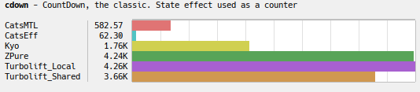
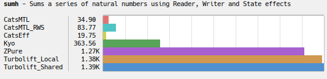

🚧 WIP 🚧
🚧 WIP 🚧
Turbolift: Algebraic Effects for Scala 3
Highlights
⭐ Expressive power
Turbolift supports constructs rarely found in other effect systems, or in new programming languages with native support for Algebraic Effects. See Advanced Features.
⭐ High performance
Excerpt from Effect Zoo microbenchmark results:


More results here.
⭐ Lightweight syntax
import turbolift.!!
import turbolift.effects.{Reader, State, Error}
case object MyReader extends Reader[Int]
case object MyState extends State[Int]
case object MyError extends Error[String]
val program =
for
a <- MyState.get
b <- MyReader.ask
c <- {
if b != 0
then !!.pure(a / b)
else MyError.raise(s"Tried to divide $a by zero")
}
_ <- MyState.put(c)
yield ()
// program: Computation[Unit, MyReader & MyError & MyState] = turbolift.Computation@41212219
val result = program
.handleWith(MyState.handler(100).justState)
.handleWith(MyReader.handler(3))
.handleWith(MyError.handler)
.run
// result: Either[String, Int] = Right(value = 33)
Usage
libraryDependencies += "io.github.marcinzh" %% "turbolift-core" % "0.52.0"
Credits
-
Turbolift’s syntax and typing of effects and handlers evolved from the predecessor project: Skutek (Eff monad).
-
The monad of delimited continuations is inspired by Scala Effekt.
-
IO related parts (WIP) are inspired by Cats Effect and ZIO.